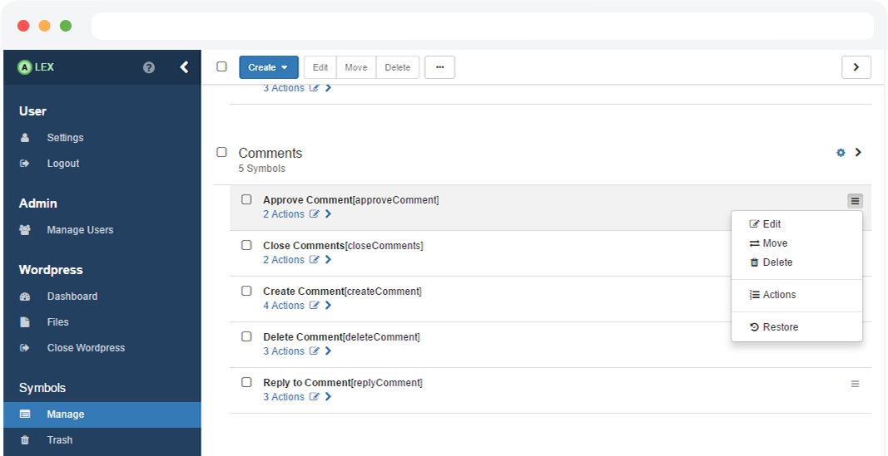

Active Automata Learning for web applications and JSON-based REST services

Active Automata Learning for web applications and JSON-based REST services
Using ALEX makes it easy to visually model actions on a web application using Selenium and allows interactions with RESTful APIs.
Based on the modeled actions, a learning algorithm executes these actions on the real application and observes its behaviour.
At the end, the learner gives you a learned model of your application that you can use to verify the correctness of features.
Since the application is written in Java, the operation system should not matter as long as you have a Java JRE 8 installed. It is required that you have a modern web browser installed on your pc. If you use one of the following browsers you should do fine:
If you are a developer, head over to the dev docs to see a list of the requirements.